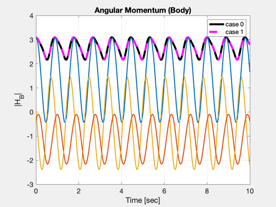
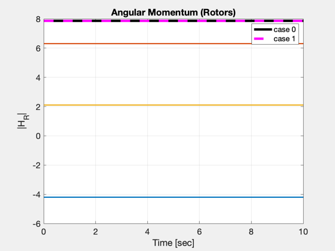
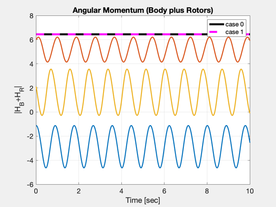
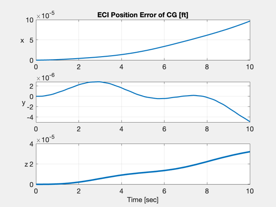
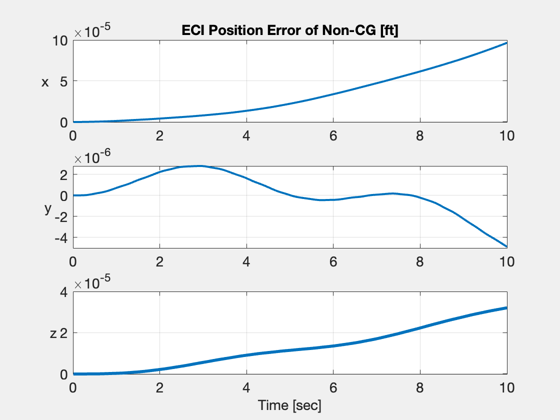

Simulate the linear and angular states of a rigid body using "AC.m"
Four different geometries are available to choose from.
A rotor may be included or omitted.
The motion is simulated using two different cases.
case 0 -- The origin of the body frame coincides with the CG
case 1 -- The origin of the body frame is translated to a non-CG
point
The inertias for case 0 and case 1 are different, according to the
parallel axis theorem.
The initial angular velocity is different for each case IF the inertia
matrix has non-zero off-diagonal terms.
No aerodynamic forces or torques are considered.
VERIFICATION
============
* The trajectories of both the CG and a non-CG point on the body are
computed for each case, and the errors are plotted.
* The total angular momentum (body + rotors) is plotted.
It should be constant.
------------------------------------------------------------------------
See also QECI, AC, ACInit, @acstate/acstate.m, IConv, QTForm,
TranslateAxes, Constant, TimeGUI, Cross, Dot, Mag, SkewSymm, Unit
------------------------------------------------------------------------
Contents
Paramters
rotor = 1;
geometry = 4;
Global for the time GUI
global simulationAction
simulationAction = ' ';
Set up database
d.mu = 1.407644155238e+16;
d.name = 'RigidBody';
d.theta0 = 0;
d.wPlanet = [0;0;0];
d.actuator.name = [];
d.aero.name = [];
d.engine.name = [];
d.sensor.name = [];
d.disturb.name = [];
d.wind.name = [];
d.flex = [];
if( rotor )
d.rotor.inertia = 2;
d.rotor.u = Unit([1;-2;3]);
d.rotor.name = [];
else
d.rotor = [];
end
Load the standard atmosphere
d.atmData = load('AtmData.txt');
d.atmUnits = 'eng';
Control
d.control.throttle = 0;
d.control.elevator = 0;
d.control.aileron = 0;
d.control.rudder = 0;
mass
mass = 1;
geometry
switch geometry
case 1
R = 2;
mass = 1;
cg = [0;0;-3*R/8];
Ixx = (83/320)*mass*R^2;
Iyy = (83/320)*mass*R^2;
Izz = (2/5) *mass*R^2;
Ixy = 0;
Ixz = 0;
Iyz = 0;
case 2
R = 3;
L = 10;
mass = 1;
cg = [0;0;-L/2];
Ixx = (1/4)*mass*R^2 + (1/12)*mass*L^2;
Iyy = (1/4)*mass*R^2 + (1/12)*mass*L^2;
Izz = (1/2)*mass*R^2;
Ixy = 0;
Ixz = 0;
Iyz = 0;
case 3
a = 1;
b = 2;
c = 3;
cg = [a;b;c]/4;
Ixx = (3/80)*mass*(b^2 + c^2);
Iyy = (3/80)*mass*(a^2 + c^2);
Izz = (3/80)*mass*(a^2 + b^2);
Ixy = -(1/80)*mass*a*b;
Ixz = -(1/80)*mass*a*c;
Iyz = -(1/80)*mass*b*c;
case 4
R = 2;
L = 5;
mass = 1;
cg = [0;-R/pi;-L/4];
Ixx = (3/20-1/pi/pi)*mass*R^2 + 3/80*mass*L^2;
Iyy = (3/20) *mass*R^2 + 3/80*mass*L^2;
Izz = (3/10-1/pi/pi)*mass*R^2;
Ixy = 0;
Ixz = 0;
Iyz = -1/(20*pi)*mass*R*L;
end
inertia matrix
inertia0 = [Ixx; Iyy; Izz; Ixy; Ixz; Iyz];
inertia1 = TranslateAxes( inertia0, -cg, mass );
cg location for cases 0, 1
cG0 = [0;0;0];
cG1 = cg;
Re = Constant('equatorial radius earth') * 1e3 / Constant('ft to m');
rCG = [Re+150;0;0];
vCG = [15; 15; 0];
i0 = IConv(inertia0);
i1 = IConv(inertia1);
m1 = SkewSymm(cG1);
wCG = [0;2;0];
HCG = i0*wCG;
w0 = i0\(HCG);
w1 = (i1+m1*m1)\(HCG);
eulInit = [0;0;0];
q = QECI( rCG, eulInit );
r0i = rCG - QTForm(q,cG0);
r1i = rCG - QTForm(q,cG1);
v0i = vCG + Cross(w0,-cG0);
v1i = vCG + Cross(w1,-cG1);
wR = ones(length(d.rotor),1)*5;
engine = [];
actuator = [];
sensor = [];
flex = [];
disturb = [];
Initial time and state
t = 0;
x0 = acstate( r0i, q, w0, v0i, wR, mass, inertia0, cG0, engine, actuator, sensor, flex, disturb );
x1 = acstate( r1i, q, w1, v1i, wR, mass, inertia1, cG1, engine, actuator, sensor, flex, disturb );
Initialize the model
dT = 0.01;
nSim = 10/dT;
d0 = ACInit( x0, d );
d1 = ACInit( x1, d );
nR = d0.nRotors;
r0 = zeros(3,nSim);
v0 = zeros(3,nSim);
q0 = zeros(4,nSim);
w0 = zeros(3,nSim);
wR0 = zeros(nR,nSim);
r1 = zeros(3,nSim);
v1 = zeros(3,nSim);
q1 = zeros(4,nSim);
w1 = zeros(3,nSim);
wR1 = zeros(nR,nSim);
Initialize the time display
tToGoMem.lastJD = 0;
tToGoMem.lastStepsDone = 0;
tToGoMem.kAve = 0;
[ ratioRealTime, tToGoMem ] = TimeGUI( nSim, 0, tToGoMem, 0, dT,...
'Testing Equations of Motion for AC.m' );
for k = 1:nSim
[ ratioRealTime, tToGoMem ] = TimeGUI( nSim, k, tToGoMem, ratioRealTime, dT );
r0(:,k) = get(x0,'r');
v0(:,k) = get(x0,'v');
q0(:,k) = get(x0,'q');
w0(:,k) = get(x0,'w');
r1(:,k) = get(x1,'r');
v1(:,k) = get(x1,'v');
q1(:,k) = get(x1,'q');
w1(:,k) = get(x1,'w');
wR0(:,k) = get(x0,'wR');
wR1(:,k) = get(x1,'wR');
x0 = AC( x0, t, dT, d0 );
x1 = AC( x1, t, dT, d1 );
t = t + dT;
switch simulationAction
case 'pause'
pause
simulationAction = ' ';
case 'stop'
return;
case 'plot'
break;
end
end
TimeGUI('close');
t = (1:k)*dT;
r0 = r0(:,1:k);
v0 = v0(:,1:k);
q0 = q0(:,1:k);
w0 = w0(:,1:k);
wR0 = wR0(:,1:k);
r1 = r1(:,1:k);
v1 = v1(:,1:k);
q1 = q1(:,1:k);
w1 = w1(:,1:k);
wR1 = wR1(:,1:k);
Compute the angular momentum of the body about the CG for both cases
H0 = i0*w0 - mass*Cross(cG0,Cross(w0,cG0));
H1 = i1*w1 - mass*Cross(cG1,Cross(w1,cG1));
Compute the angular momentum of the rotors for both cases
HR0 = zeros(3,k);
HR1 = zeros(3,k);
for i=1:nR
HR0 = HR0 + d0.rotor(i).inertia*d0.rotor(i).u*(wR0(i,:)+Dot(d0.rotor(i).u,w0));
HR1 = HR1 + d1.rotor(i).inertia*d1.rotor(i).u*(wR1(i,:)+Dot(d1.rotor(i).u,w1));
end
fprintf('2-norm of angular momentum difference: %f\n',norm( (H0+HR0)-(H1+HR1) ) )
2-norm of angular momentum difference: 0.000000
Compute the CG position in ECI coordinates
rCG0 = r0 + QTForm( q0, cG0 );
rCG1 = r1 + QTForm( q1, cG1 );
rCG3 = rCG*(t./t) + vCG*t - 0.5*[32.1;0;0]*(t.*t);
Compute a non-CG position in ECI coordinates
x = -cG1;
rNCG0 = r0 + QTForm( q0, cG0 + x );
rNCG1 = r1 + QTForm( q1, cG1 + x );
Create the plots
figure, plot(t,Mag(H0),'k',t,Mag(H1),'m--','linewidth',4), hold on
c = get(gca,'colororder');
c = [c(1:3,1:3); c(1:3,1:3)];
set(gca,'colororder',c)
plot(t,H0,t,H1,'--','linewidth',2), grid on, zoom on
title('Angular Momentum (Body)','fontsize',14)
legend('case 0','case 1');
ylabel('|H_B|','fontsize',14);
xlabel('Time [sec]','fontsize',14);
set(gca,'fontsize',14);
if( nR > 0 )
figure, plot(t,Mag(HR0),'k',t,Mag(HR1),'m--','linewidth',4), hold on
set(gca,'colororder',c)
plot(t,HR0,t,HR1,'--','linewidth',2), grid on, zoom on
title('Angular Momentum (Rotors)','fontsize',14)
legend('case 0','case 1');
ylabel('|H_R|','fontsize',14);
xlabel('Time [sec]','fontsize',14);
set(gca,'fontsize',14);
figure, plot(t,Mag(H0+HR0),'k',t,Mag(H1+HR1),'m--','linewidth',4), hold on
set(gca,'colororder',c)
plot(t,H0+HR0,t,H1+HR1,'--','linewidth',2), grid on, zoom on
title('Angular Momentum (Body plus Rotors)','fontsize',14)
legend('case 0','case 1');
ylabel('|H_B+H_R|','fontsize',14);
xlabel('Time [sec]','fontsize',14);
set(gca,'fontsize',14);
end
figure,
subplot(311)
plot(t,rCG0(1,:)-rCG1(1,:),'linewidth',2), grid on, zoom on,
set(gca,'fontsize',14)
title('ECI Position Error of CG [ft]','fontsize',14)
ylabel('x','rotation',0,'fontsize',14);
subplot(312)
plot(t,rCG0(2,:)-rCG1(2,:),'linewidth',2), grid on, zoom on,
set(gca,'fontsize',14)
ylabel('y','rotation',0,'fontsize',14);
subplot(313)
plot(t,rCG0(3,:)-rCG1(3,:),'linewidth',3), grid on, zoom on,
set(gca,'fontsize',14)
xlabel('Time [sec]','fontsize',14);
ylabel('z','rotation',0,'fontsize',14);
figure,
subplot(311)
plot(t,rNCG0(1,:)-rNCG1(1,:),'linewidth',2), grid on, zoom on,
set(gca,'fontsize',14)
title('ECI Position Error of Non-CG [ft]','fontsize',14)
ylabel('x','rotation',0,'fontsize',14);
subplot(312)
plot(t,rNCG0(2,:)-rNCG1(2,:),'linewidth',2), grid on, zoom on,
set(gca,'fontsize',14)
ylabel('y','rotation',0,'fontsize',14);
subplot(313)
plot(t,rNCG0(3,:)-rNCG1(3,:),'linewidth',3), grid on, zoom on,
set(gca,'fontsize',14)
xlabel('Time [sec]','fontsize',14);
ylabel('z','rotation',0,'fontsize',14);
assignin('base','t', t );
assignin('base','q0',q0);
assignin('base','q1',q1);
assignin('base','r0',r0);
assignin('base','r1',r1);
assignin('base','v0',v0);
assignin('base','v1',v1);
assignin('base','w0',w0);
assignin('base','w1',w1);
assignin('base','i0',i0);
assignin('base','i1',i1);
assignin('base','cG0',cG0);
assignin('base','cG1',cG1);
    